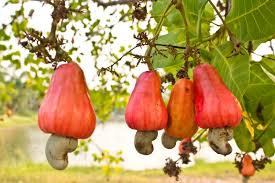
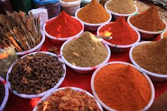

Overview
Goa is not only known for its beaches but also for its rich organic farming practices, especially in cashew production and spice cultivation.
Organic Cashew Farming
Goa is one of the leading producers of organic cashews. These are grown without the use of harmful chemicals, preserving the natural quality and taste.
Spice Cultivation
Spices like black pepper, cardamom, and nutmeg are grown organically in Goa, utilizing eco-friendly farming techniques and promoting sustainable agriculture.
Sustainable Farming Practices
- Use of organic manure and composting techniques
- Natural pest management systems
- Water conservation practices in farms
Export Potential
Goa’s organic produce, particularly cashews and spices, has a growing demand in international markets, including the United States and Europe.
Goa’s organic farming practices contribute to both environmental sustainability and the economy.
← Back to Map